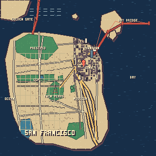

SF live ops map
320px native · CSS pixelated · lat/lon overlay

Demo art: procedurally generated stylized geometry. If regenerated using OSM/Overpass data, display © OpenStreetMap contributors. DataSF streets source is PDDL 1.0.